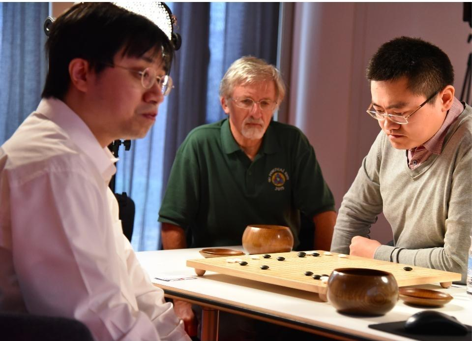

Match Against European Champion Fan Hui
In October 2015, AlphaGo played its first match against the reigning three-time European Champion, Mr Fan Hui. AlphaGo won the first ever game against a Go professional with a score of 5-0. Before the match, Fan Hui thought he would win easily, but in the end he was badly beaten. This is the beginning of the miracle.
Match Against 18-times World Champion Lee Sedol
AlphaGo then competed against legendary Go player Mr Lee Sedol, the winner of 18 world titles, who is widely considered the greatest player of the past decade. AlphaGo's 4-1 victory in Seoul, South Korea, on March 2016 was watched by over 200 million people worldwide. This landmark achievement was a decade ahead of its time.
The game earned AlphaGo a 9 dan professional ranking, the highest certification. This was the first time a computer Go player had ever received the accolade. During the games, AlphaGo played several inventive winning moves, several of which - including move 37 in game two - were so surprising that they upended hundreds of years of wisdom. Players of all levels have extensively examined these moves ever since.

The Chinese Summit
In May 2017 Deepmind teamed up with the world’s best Go players for The Future of Go Summit - a five day festival of Go and artificial intelligence in the game's birthplace, China - to uncover yet more secrets of this ancient game. A variety of game formats have been designed to unearth even more new strategies - including pair Go, team Go, and a 1:1 match with the world’s number one player Ke Jie. It won against Ke Jie to clinch a second, decisive win of a three-part series that is taking place in Wuzhen, China.